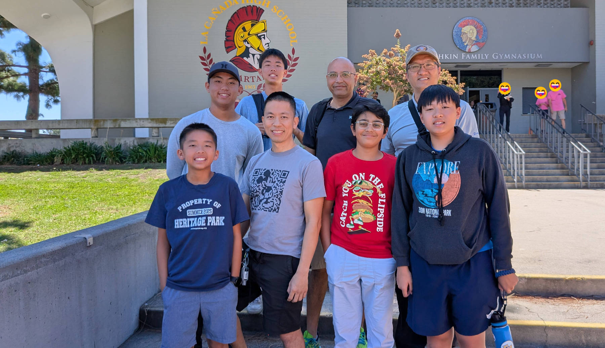

Meet the Team
We are a community-based robotics team dedicated to the FIRST Tech Challenge (FTC) competition. Based in Orange County, California, we are a group of passionate students united by a drive to learn, build, and compete.
Our mission goes beyond building robots; we focus on developing crucial STEM skills—from mechanical design and coding to strategic thinking and problem-solving. We live the core FTC principles and values by practicing Gracious Professionalism (competing fiercely while treating everyone with respect) and Coopertition (working together even with rival teams).
Through the FTC season, our members discover how to collaborate effectively in a team environment, preparing them to tackle real-world challenges with creativity and skill.
Team Members
Tydus
Role: Programmer, Team Captain
Grade: 10
Background:Tydus has a strong interest in programming and has been involved in various coding projects. He enjoys tackling complex problems and finding innovative solutions. When he's not coding, Tydus loves to play video games, playing soccer, and tennis.
Landen
Role:CAD, Builder, Marketing
Grade: 10
Background: Landen is a sophomore in high school who has been playing tennis for several years and enjoys both recreational and competitive play. His interest in robotics began in 4th grade, sparking a curiosity for technology and problem-solving. He’s an active member of school clubs such as Public Works and Model United Nations, and also volunteers at local events and tennis camps.
Maximus
Role: CAD, Builder
Grade: 7
Background: Max is passionate about design and engineering. He enjoys bringing ideas to life through CAD and teamwork. When he's not working on robotics, Max loves to play basketball, tennis, and video games.
Korben
Role: CAD, Builder
Grade: 9
Background: Korben is a creative thinker with a passion for design and engineering. He enjoys working on CAD projects and collaborating with his teammates. In his free time, Korben loves to play video games, and build models.
Ram
Role: CAD, Builder, Programmer
Grade: 8
Background: Ram is a dedicated team member with a passion for robotics and programming. He enjoys tackling challenges and finding innovative solutions. In his free time, Ram loves to explore new technologies and work on personal projects.
Coaches
Ben
Role: Lead Coach
Background: Ben has been passionate with software engineering since a young age. He enjoys mentoring younger students and helping them develop their skills. In his free time, Ben loves to read, design, and spend time with his family. Current hobbies include riding the AI wave and exploring new technologies.
Tan
Role: Coach
Background: Tan has a background in mechanical engineering and has been involved in robotics for several years. He enjoys working with students and helping them develop their skills in engineering and programming.
Mentors
Jem
Role: Lead Mentor
Background: Ben has been passionate with software engineering since a young age. He enjoys mentoring younger students and helping them develop their skills. In his free time, Ben loves to read, design, and spend time with his family. Current hobbies include riding the AI wave and exploring new technologies.
Jignesh
Role: Mentor
Background: Jignesh works for Panasonic and has a strong background in electrical engineering. He enjoys sharing his knowledge with students and helping them grow in their understanding of robotics and programming.
Team Inkineers
Role: Mentor
Background: Team Inkineers is a group of talented students who are passionate about robotics and engineering. They've hosted summer camps and work together to inspire and mentor the next generation of engineers and programmers.
Team i-Kineers
 FTC Decode Launch 2025Donations
Support our team by making a donation. Your contributions help us build and compete!
Donate NowSponsors
Boeing
Panasonic

HackClub
👨👩👧👦 Our Parents
Who donate not just financially, but with their time and support! ❤️